La aplicación Pure Life se encarga de recoger las medidas de diferentes gases contamines y nocivos para las personas, mientras el usuario se desplaza con transporte libre de emisiones, patinetes eléctricos y bicicletas. Nuestro sensor se instalará en la red de transporte publico mediante una carcasa que albergará al sensor, será posible instalar este sistema a la red existente de patinetes y bicicletas públicas.
La aplicación avisara al usuario en el caso de que este expuesto a altos niveles nocivos de gases. Con todos estos datos se construirán mapas que albergarán toda la información de la calidad del aire en la zona.
Nuestro objetivo principal es que nuestro usuario sepa que respira en todo momento.

Descarga la APP de la Google play.

Encuentra un patinete o bicicleta PureLife en tu zona.

Escanea el codigo QR que encontraras en el patinete con tu APP PureLife.

A disfrutar de un transporte libre de emisiones!
Con tu cuenta PureLife puedes consultar la calidad del aire que respiras.
Lorem
Lorem